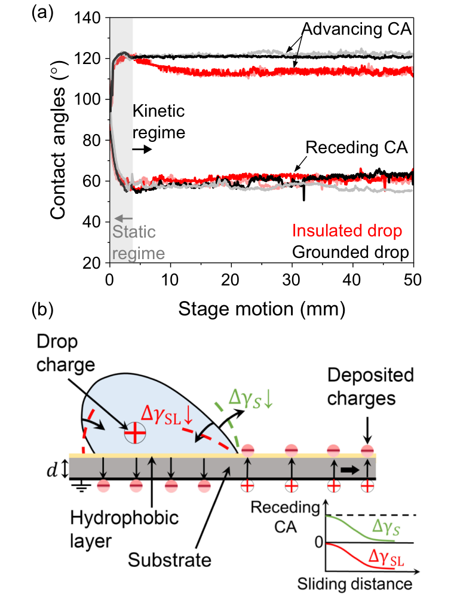

水滴滑动带电后，前后接触角为何反应不同？
接地与绝缘实验区分了自发电润湿和沉积表面电荷的影响。在后退接触线附近，两种效应对角度的影响近似补偿。
How Spontaneous Electrowetting and Surface Charge Affect Drop Motion
研究背景
作者关注的是疏水表面上水滴滑动时的接触带电如何反馈到动态接触角。已有研究知道滑动水滴会在后退接触线处分离电荷，水滴获得净正电荷，表面留下负电荷；也知道带电会影响液滴运动。但不清楚的是：这些电荷到底通过哪几种能量项改变 advancing/receding contact angles，各自贡献有多大。
论文把问题拆成三类效应：
- 自发电润湿：液滴净电荷相对底部接地电极形成电势
U，等效降低固-液界面能ΔγSL，从而降低 advancing 和 receding contact angle。 - 表面电荷效应：水滴离开后留在固-气界面的电荷需要静电功，等效提高固-气界面能
ΔγS，也会降低接触角，尤其作用在后退接触线附近。 - 黏性耗散：高毛细数下会改变动态接触角；本文刻意使用低 Ca 以尽量排除它。
核心问题不是“滑动会不会带电”，而是：在低 Ca、近似无黏性耗散的条件下，自发电润湿和表面电荷效应如何分别改变前进角和后退角。
研究方法
作者使用 5 μL Milli-Q 水滴在 PFOTS/OTS 涂层石英上以恒速滑动，速度范围 0.1-10 mm/s，对应约 Ca ~ 10^-6-10^-4，低于文中讨论的黏性耗散主导区间。石英厚度系统改变为 0.25, 0.5, 1, 2, 5 mm；底部金属板接地。
关键实验设计是接地与绝缘的对照：
- 金涂层导电毛细管拖动水滴：液滴始终接地，电势近似为零，因此去掉自发电润湿，只保留表面沉积电荷对后续接触线的影响。
- 玻璃毛细管拖动水滴：液滴绝缘，滑动中积累电荷，因此同时包含自发电润湿和表面电荷效应。
- 另有柔性接地线实验：滑动过程中从接地切换到绝缘，用来直接观察饱和长度和表面电荷梯度。
Figure 1（方法/机制示意）：这张图建立全篇的变量分工。Fig. 1(a) 把水滴电荷对应的 ΔγSL、沉积表面电荷对应的 ΔγS 和黏性耗散放在同一幅能量/力图里；Fig. 1(b) 说明导电毛细管让水滴维持零电势；Fig. 1(c) 说明玻璃毛细管让电荷保留在水滴内。因此后续所有结果都依赖这个实验隔离逻辑：接地滴用于估计表面电荷效应，绝缘滴用于观察二者叠加。
方法上的优点是把倾斜板实验中常混在一起的速度、重力分量、带电与黏性耗散分离开；限制是表面电荷分布和模型仍需简化，文中 ΔγS 的精确值依赖带电区域形状和尺寸，补充材料中才有更多 Kelvin probe 与模型细节。
具体结果
结果 1：绝缘滴的 advancing angle 降低，直接指向自发电润湿
在 1 mm PFOTS 石英上，接地滴以 2 mm/s 滑动时，稳态 advancing/receding angles 约为 120° 和 60°。绝缘滴在同一表面上滑动时，advancing angle 在约 15 mm 滑动距离后降到约 113°，与接地滴相比下降约 7°。因为液滴前方还没有沉积表面电荷，前进角的下降主要归因于液滴自身电势引起的自发电润湿。
作者用电润湿关系估计液滴电势约 700 V，对应固-液界面能降低约 8 ± 3 mN/m。这里的 15 mm 也被解释为电荷饱和长度 λ，即水滴积累到足够电势后，后方继续沉积电荷趋弱。

Figure 2（主结果/机制解释）：Fig. 2(a) 是最关键的接触角曲线：黑/灰为接地滴，红/粉为绝缘滴；它显示绝缘滴前进角下降，而后退角几乎与接地滴重合。Fig. 2(b) 是作者对这个反直觉结果的机制图：前进线只看到自发电润湿，所以前进角下降；后退线同时看到自发电润湿和表面电荷效应，二者方向在接触角响应上互相抵消。读图时要注意，Fig. 2(a) 是两次独立重复而不是大样本统计，主要用于机制定性和量级估计。
结果 2：receding angle 几乎不随水滴是否带电改变，说明两项电效应在后缘补偿
如果只考虑自发电润湿，绝缘滴的 receding angle 应该比接地滴更低。但实验中二者都约为 60°，差异不显著。作者的解释是：随着液滴电势 U 增大，表面继续沉积的电荷密度 σ 下降，表面电荷效应 ΔγS 变弱；同时自发电润湿项 ΔγSL 增强。由于二者都与电荷分离量的平方量级相关，后退接触线处出现近似 ΔγSL = ΔγS 的补偿。
这个结果还解释了为什么接触角滞后 CAH = θa - θr 在绝缘滴中减少约 7°：主要是 advancing angle 下降，而 receding angle 没有同步下降。
结果 3：厚度、速度和盐浓度变化下，补偿关系仍然稳健
作者用石英厚度扫掠和速度扫掠检验机制的适用性。对于 0.25-5 mm 厚的 PFOTS 石英，5 μL 水滴在 2 mm/s 下的 receding angle 对接地/绝缘状态仍然近似一致。薄基底时，平行板近似下的表面能变化可写成 ΔγS = σ^2 d / (2 ε0 εs)；以 d = 0.25 mm、εs = 3.5、σ ≈ 60 μC/m^2 估算，ΔγS 约 15 mN/m。文中还给出薄基底下 ΔγSL 最大下降约 17 mN/m，量级相近。
速度扫掠为 0.1, 1, 10 mm/s。在这些低 Ca 条件下，不同速度的接地/绝缘滴 receding angle 仍近似一致；盐浓度从 0.1 到 100 mM 时，也没有检测到显著 receding angle 差异，约为 89° ± 5°。这些结果支持“补偿”不是单一参数点的巧合。
Figure 3（参数扫掠/稳健性）：Fig. 3(a) 比较不同石英厚度下接地与绝缘水滴的平均接触角，主要证明后退角相等这一现象跨厚度存在；Fig. 3(b) 比较不同速度，说明在 0.1-10 mm/s、低 Ca 范围内，补偿关系对速度不敏感。注意作者也指出厚基底时平行板电容模型不再严格适用，因为液滴尺寸与基底厚度可比。
结果 4：接地到绝缘的切换实验直接显示饱和长度和表面电荷梯度
柔性接地线实验中，水滴先接地滑动，约 18 mm 处断开接地线，变成绝缘滴。断开后 advancing angle 从约 113° 逐渐降到约 105°，约在 32 mm 后稳定，对应饱和长度 λ = 14 mm。随后作者立刻让第二个接地滴沿同一路径滑动，第二滴的 advancing angle 先降低到约 100°，再在 13.5-27 mm 区间逐渐恢复到 113°，这被解释为第一滴留下的表面电荷密度梯度被第二滴探测到。
无论水滴是否处在接地、绝缘或经过带电梯度区域，receding angle 都保持约 83°，进一步支持后退接触线处 ΔγSL 与 ΔγS 的补偿。
Figure 4（动态切换/机制验证）：这张图不是新的参数扫掠，而是把“电荷状态变化”放进同一次运动过程里。红线显示断开接地线后，绝缘滴 advancing angle 在一个饱和长度内下降；黑线显示第二个接地滴探测前一滴留下的表面电荷梯度。它支撑两个关键判断：一是 λ 可以由接触角变化直接估计，二是表面电荷梯度确实存在并可影响前进角。
关键机制
作者的机制链可以压缩为：
- 水滴在疏水表面滑动，后退接触线处发生固-液接触带电，表面留下负电荷，液滴带正电。
- 绝缘滴中，电荷不能被毛细管导走，因此形成相对底部接地电极的电势
U；这个电势通过自发电润湿降低固-液界面能ΔγSL，使接触角降低。 - 已沉积在露出固体表面的电荷增加固-气界面能
ΔγS，也使局部接触角降低。 - 前进接触线处没有预先沉积的表面电荷，所以主要表现为自发电润湿导致 advancing angle 降低。
- 后退接触线处二者同时存在：随着水滴电势升高，后续电荷分离减少，
ΔγS下降；与此同时ΔγSL上升。两项能量变化在实验量级上近似相等，所以 receding angle 对带电状态不敏感。
适用范围与局限
- 主文中的接触角曲线重复数较少，Fig. 3 的误差条来自三次独立滑动测量；结论强在机制一致性和量级闭合，不是大样本统计。
ΔγS的精确值依赖带电区域几何、厚度、边界条件和电荷分布；薄基底时平行板估算较合理，2-5 mm 厚基底时作者也承认模型不严格。- 本文刻意限制在低 Ca，避免黏性耗散主导；高速度、高 Ca、强接触线形变或复杂粗糙表面上，三项效应可能重新耦合。
- 主文没有直接给出完整空间电荷分布的时间演化，只通过 Kelvin probe 补充材料、第二滴探测和接触角响应间接支撑。
- 结果主要来自水-PFOTS/OTS-石英体系；换成导电基底、不同涂层厚度、不同离子污染或挥发/冷凝场景时，电荷泄放和界面能项需要重新估计。